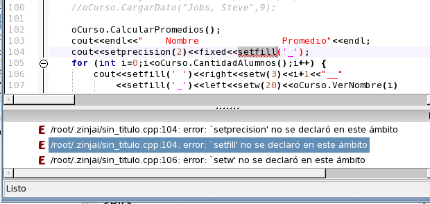
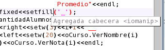

Un conjunto de errores que debe corregir es el que corresponde a los manipuladores de flujo (setw, setfill, setprecision, etc). Observe estos errores al final de la lista de errores.

Haga doble click en alguno de ellos para mover el cursor a la linea correspondiente, y, una vez seleccionado el manipulador (cualquiera de ellos, ya que todos pertenecen a la misma cabecera), presione Ctrl+H para solucionar el problema. ZinjaI insertará el #include faltante al comienzo del archivo, mostrando una mensaje alusivo.

Volver... Continuar...